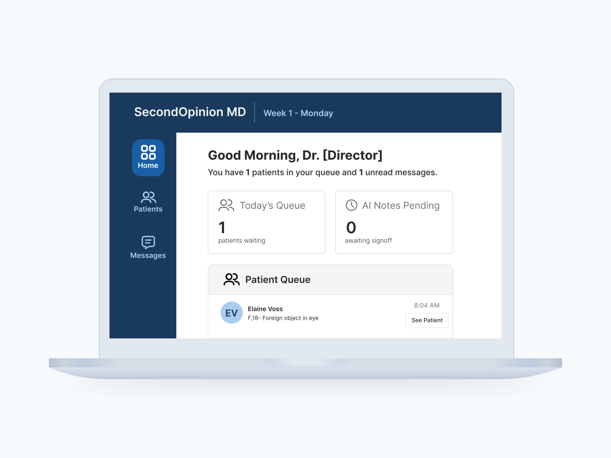

I'm a researcher who builds, and a builder who researches.
A clinical simulation game teaching practitioners when to trust AI diagnostics and when to push back, grounded in real physician scenarios and consequences.
Read case study
Solo-built an AI dashboard that gives leadership a real read for the first time on who's showing up and how events are landing, from survey design through Claude-powered analysis
Read case study